Delivery Controller 2507 and Licensing
Navigation
- Change Log
- Upgrade to version 2507
- New Install Preparation
- Delivery Controller 2402 LTSR CU2 New Install
- Create Site / Databases
- Second Controller
- SSL for Delivery Controller
- Concurrent Logon Hard Limit
- Local Host Cache
-
Database Maintenance - read-committed snapshot, Director grooming, Logging Database operations, etc.
- Studio Administrators
- Customer Experience Improvement Program (CEIP)
- Web Studio Settings
- vCenter Connection - vCenter certificate, Hosting Resources
- Citrix Licensing Manager
- Activate Citrix License
- License Server CEIP
- Citrix License Server Monitoring
- Activate Remote Desktop Licensing Server
- Citrix Scout
- Health Check
:idea: = Recently Updated
Change Log
Upgrade Information
If you are performing a new install of Delivery Controller, then skip to the New Install Section.
You can in-place upgrade directly from any Delivery Controller version 2203 or newer. The operating system must be Windows Server 2019 or newer. And SQL must be SQL 2019 or newer.
During the upgrade of Delivery Controller, be aware that a database upgrade is required. Either get a DBA to grant you temporary sysadmin permission or use Citrix Site Manager to generate SQL scripts that a DBA must then run in SQL Studio.
CVAD Versions you can upgrade from - Virtual Apps and Desktops 2402 LTSR with or without CUs, up to and including CU2 - Virtual Apps and Desktops 2203 LTSR with or without CUs, up to and including CU6 - Currently supported CR versions of Citrix Virtual Apps and Desktops
Virtual Channel Allow List - the Citrix Policy setting named Virtual Channel Allow List is enabled by default in VDA 2203 and newer. Whitelist your non-Citrix (e.g., Zoom) virtual channels before upgrading your VDAs, or else your non-Citrix virtual channels will stop working.
NVIDIA - ensure your NVIDIA Virtual GPU software supports the version of CVAD that you are upgrading to. Consider Utilizing Local Host Cache for Nondisruptive Database Upgrades at Citrix Docs.
License Server Upgrade - Before upgrading to Delivery Controller 2507, upgrade your Citrix License Server to 11.17.2.0 Build 53100 or newer. Citrix is deprecating the file based licensing system, and moving to the new License Activation Service. The file based license service will reach end of life on April 15, 2026. When upgrading your license server now, use this time to active the LAS system. For additional LAS information click here
Delivery Controller OS Compatibility - Delivery Controller 2507 is supported on Gui and Core versions of Windows Server 2025, Windows Server 2022, Windows Server 2019.
- Windows Server 2016 and older are no longer supported.
- See ../cvad-upgrades/#deliverycontrollers for how to upgrade the operating system.
SQL Compatibility - Delivery Controller 2507 does not support database engines older than 2019.
- The Delivery Controller installer does not upgrade the lhc database, so you'll have to do it manually. See Replace SQL Server Express LocalDB at Citrix Docs.
VDA OS Compatibility - Virtual Delivery Agent (VDA) 2507 is only supported on a limited number of operating system versions. - Windows 10 (under support) or later - Windows Server 2019 or later - Apple Silicon MacOS 13.x or later (Ventura) - Debian 12.11 with GNOME, GNOME Classic, KDE, MATE, Xfce - Debian 11.11 with GNOME, GNOME Classic, KDE, MATE - RHEL 9.6/9.4 with GNOME, MATE, Xfce - RHEL 8.10 with GNOME, GNOME Classic, MATE, Xfce - Rocky Linux 9.6/9.4 with GNOME, MATE, Xfce - Rocky Linux 8.10 with GNOME, GNOME Classic, KDE, MATE, Xfce - SUSE 15.6 with GNOME, GNOME Classic, MATE - Ubuntu 22.04 with GNOME, GNOME Classic, KDE, MATE, Xfce - Ubuntu 24.04 with GNOME (Mutter 46.2-1 or later required), GNOME Classic (Mutter 46.2-1 or later required), KDE, MATE, Xfce
For older Windows Operating Systems use the latest support CU LTSR VDA for that generation
Cloud VDAs support from on-premise - 2507 Supports the following cloud providers for hosting VDAs - Azure (Windows 10/11 multi-session is not hostable from on-premise Delivery Controllers) - Red Hat OpenShift - AWS - Google Cloud - Nutanix Cloud and partners - VMWare Cloud and partners
Upgrade Process
- Snapshot. Take a snapshot of the Delivery Controller machine before attempting the upgrade. The Citrix installer requires a reboot before upgrading, so it's probably best to shut down the machine before you snapshot it.
- Download the Citrix Virtual Apps and Desktops 2507 ISO.
- On an existing Delivery Controller, run AutoSelect.exe from the 2507 ISO.
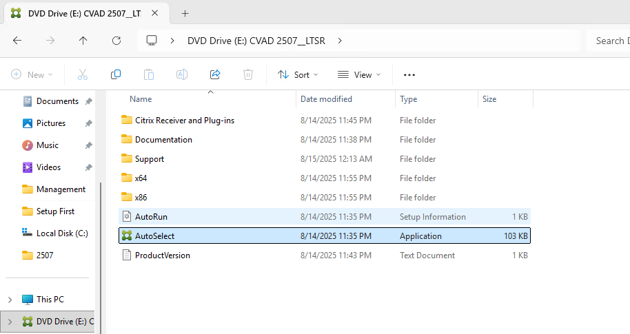
- On the top left, in the Upgrade box, click Studio and Server Components.
- In the Licensing Agreement page, select I have read, understand, and accept the terms, and click Next.
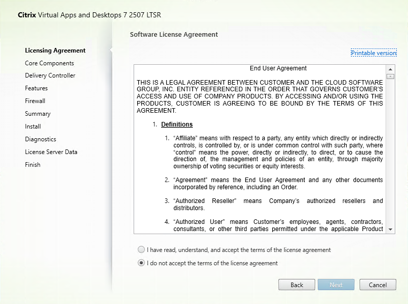
- In the Ensure Successful Upgrade page, read the steps, check the box next to I'm ready to continue, and click Next.
- If you see the Unsupported Features and Platforms page, read the list, check the box next to I understand the risk of upgrading a deployment that has unsupported features or platforms, then click Next.
- If you see a Licensing Errors page, then you need to upgrade your License Server or install an updated license file.
- If you see a SQL Server version error, then you need to upgrade your SQL Server, or move the Citrix databases to a supported SQL server.
- If you see a SQL Server Express LocalDB version error, then click the Learn More link to see instructions to upgrade it.
- If you see a window saying "We cannot determine which SQL version is currently installed", click OK.
- In the Preliminary Site Tests page, click Start Preliminary Tests.
- The tests will take a few minutes. Click Next when done.
- In the Firewall page, click Next.
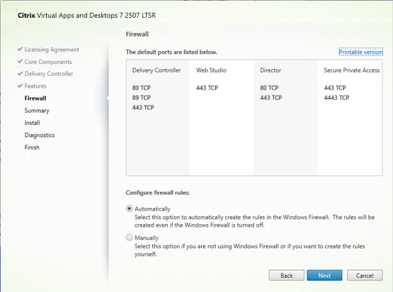
- In the Summary page, click Upgrade. Notice that StoreFront is not in this list. StoreFront is upgraded separately.
- Click OK when asked to start the upgrade.
- The machine may prompt to restart a couple times.
- After the reboot, and after logging in again, you might see a Locate 'Citrix Virtual Apps and Desktops 7' installation media window. Don't click anything yet.
- Go to the Downloaded ISO file and mount it.
- Go back to the Locate 'Citrix Virtual Apps and Desktops 7' installation media window.
- On the left, expand This PC, and click the DVD Drive.
- Click Select Folder.
-
If the upgrade fails:
- Look for MetaInstaller log files under %localappdata%\Temp\Citrix\XenDesktop Installer\MSI Log Files.
- Citrix has a MSI Log Analyzer.
- In the Finish page, check the box next to Launch Citrix Site Manager and click Finish.
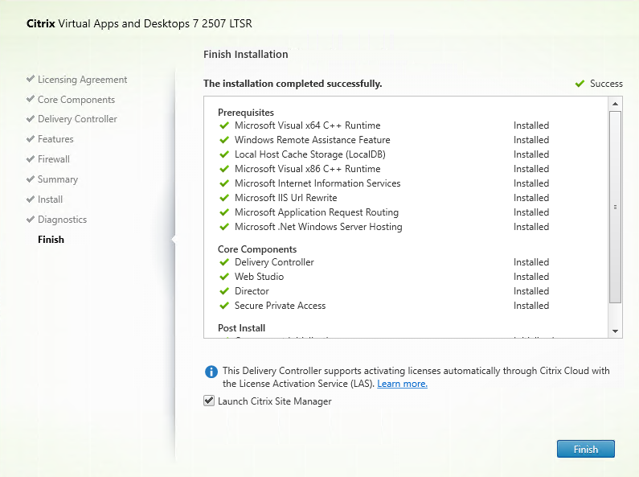
Site Manager - Upgrade Database, Catalogs, and Delivery Groups
- After Site Manager launches, if you have sysadmin permissions on SQL, then click Start the automatic Site upgrade. If you don't have full SQL permission, then get a DBA to help you, click Manually upgrade this site, and follow the instructions.
- If you choose to Manually upgrade this site, then note that there might not be an upgrade for the Logging Database schema, depending on what version you are upgrading from.
- Run the DisableServices.ps1 script before upgrading the database.
- In SQL Studio, the .sql scripts must be run in SQLCMD mode. Re-enable SQLCMD mode for each script. Run each of the .sql scripts.
- Then run EnableServices.ps1.
Other Citrix Virtual Apps and Desktops components can also be in-place upgraded:
- StoreFront
- Director
- VDAs
- Citrix Policy Management Plug-in
- Citrix Profile Management (UPM) Group Policy Templates
- Workspace app Group Policy Templates
- Workspace Environment Management (WEM)
- Citrix Provisioning
- Session Recording
- Federated Authentication Service (FAS)
New Install Preparation
Latest Release
Delivery Controller OS Compatibility - Delivery Controller 2507 is supported on Gui and Core versions of Windows Server 2025, Windows Server 2022, Windows Server 2019.
SQL Compatibility - Delivery Controller 2507 does not support database engines older than 2019.
VDA OS Compatibility - Virtual Delivery Agent (VDA) 2507 is only supported on a limited number of operating system versions. - Windows 10 (under support) or later - Windows Server 2019 or later - Apple Silicon MacOS 13.x or later (Ventura) - Debian 12.11 with GNOME, GNOME Classic, KDE, MATE, Xfce - Debian 11.11 with GNOME, GNOME Classic, KDE, MATE - RHEL 9.6/9.4 with GNOME, MATE, Xfce - RHEL 8.10 with GNOME, GNOME Classic, MATE, Xfce - Rocky Linux 9.6/9.4 with GNOME, MATE, Xfce - Rocky Linux 8.10 with GNOME, GNOME Classic, KDE, MATE, Xfce - SUSE 15.6 with GNOME, GNOME Classic, MATE - Ubuntu 22.04 with GNOME, GNOME Classic, KDE, MATE, Xfce - Ubuntu 24.04 with GNOME (Mutter 46.2-1 or later required), GNOME Classic (Mutter 46.2-1 or later required), KDE, MATE, Xfce
For older Windows Operating Systems use the latest support CU LTSR VDA for that generation
Cloud VDAs support from on-premise - 2507 Supports the following cloud providers for hosting VDAs - Azure (Windows 10/11 multi-session is not hostable from on-premise Delivery Controllers) - Red Hat OpenShift - AWS - Google Cloud - Nutanix Cloud and partners - VMWare Cloud and partners
Citrix Licensing
Upgrade your Citrix License Server to 11.17.2.0 build 51000.
- Citrix now requires Licensing telemetry as described in CTX477614 Citrix License Telemetry FAQ. The build must be 40000 or newer and you must upgrade within 6 months of release.
- You can run LicServVerify.exe from the Citrix Virtual Apps and Desktops (CVAD) ISO to verify that the License Server is compatible. Example syntax is:
**"E:\x64\XenDesktop Setup\LicServVerify.exe" -h myLicenseServer -p 27000 -v**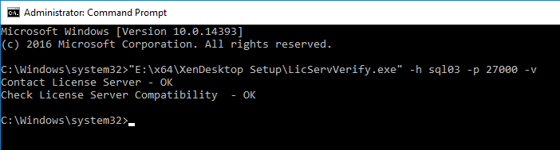
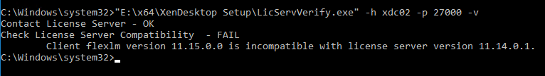
Multiple License Types - Multiple license types (but not multiple editions) are supported in a single farm. See CTX223926 How to Configure Multiple License Types within a Single XenApp and XenDesktop Site.
Cloud VDAs support - Delivery Controller 2203 and newer support public cloud (native Azure, native AWS, native Google Cloud) hosting connections, but only if your Citrix licenses are Citrix Cloud licenses with Hybrid rights. Normal on-prem licenses won't work. See CTX270373 Citrix Virtual Apps and Desktops: Public cloud support with Current Releases and Long Term Service Releases.
SQL Databases for Citrix Virtual Apps and Desktops
-
Citrix article CTX114501 - Supported Databases for Virtual Apps and Desktops (XenApp and XenDesktop) AND Provisioning (Provisioning Services)
-
SQL Server 2022 is supported with Delivery Controller 2308 and newer.
- Citrix Virtual Apps and Desktops (CVAD) 2203 and newer no longer support SQL 2014 and older.
- Citrix CTX209080 XenDesktop 7.x: Database Sizing Tool
-
Three databases - There are typically three databases: one for the Site (aka farm), one for Logging (audit log) and one for Monitoring (Director).
-
The name of the monitoring database must not have any spaces in it. See CTX200325 Database Naming Limitation when Citrix Director Accesses Monitoring Data Using OData APIs
- If you want Citrix Site Manager to create the SQL databases automatically, then the person running Studio must be a sysadmin on the SQL instances. No lesser SQL role will work. sysadmin permissions can be granted temporarily and revoked after installation.
-
Alternatively, you can use Citrix Site Manager to create SQL scripts and then ask a DBA to run those scripts on the SQL server. In that case, the person running the scripts only needs the dbcreator and securityadmin roles.
- You can use PowerShell to generate separate SQL scripts for sysadmin vs db_owner. See Preferred database rights scripts at Citrix Docs.
- It is possible to create the three databases in advance. However, you must use the non-default collation named Latin1_General_100_CI_AS_KS
- SQL High Availability Options:
-
Basic Availability Groups - Build two SQL 2016 (or newer) Standard Edition servers, and create three Basic Availability Groups, one for each database. Each Basic Availability Group has its own Listener.
- SQL Standard Edition is much cheaper than SQL Enterprise Edition.
- See Patrick van den Born How to: Configure Citrix XenApp/XenDesktop to use Microsoft SQL multi-subnet (Basic) Availability Groups.
- AlwaysOn Availability Group - Build two SQL Enterprise Edition servers, and create one AlwaysOn Availability Group with one Listener.
- Failover Clustering - Build two SQL Enterprise Edition servers, and configure SQL Database Failover Clustering.
- Cloud - Azure SQL is not supported. AWS RDS is supported by AWS, but not by Citrix. You'll need to build your own SQL Servers on IaaS VMs.
Windows Feature
Installing Group Policy Management (GPMC) on the Delivery Controllers lets you edit Citrix-targeted Group Policy Objects (GPOs) directly from the Delivery Controllers.
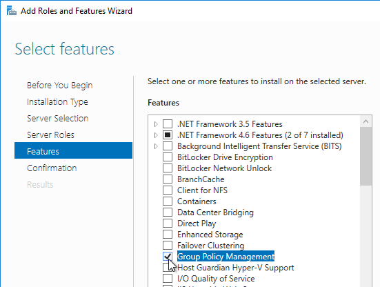
Citrix has a Citrix Group Policy Management Plug-in that adds the Citrix Policies node to the Group Policy Editor. The Citrix Group Policy Management Plug-in is included with the installation of Citrix Studio, meaning that running GPMC on the Delivery Controller automatically grants you access to the Citrix Policies node in the GPOs. If you edit GPOs on a machine that doesn't have Citrix Studio installed, then you won't see the Citrix Policies node in GPOs until you manually install the Citrix Group Policy Management Plug-in.
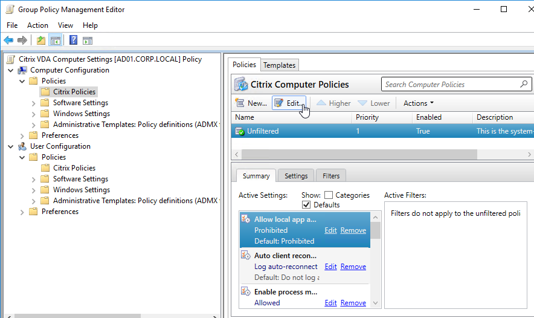
vCenter Service Account
Create a role in vSphere Client. Assign a service account to the role at the vCenter Datacenter or higher level. Delivery Controller will use this service account to login to vCenter.
Delivery Controller New Install
- A typical size for the Controller VMs is 2-4 vCPU and 8+ GB of RAM. If all components (Delivery Controller, StoreFront, Licensing, Director, SQL Express) are installed on one server, then you might want to bump up memory to 10 GB or 12 GB. 5 GB is the minimum memory.
-
From Local Host Cache sizing and scaling at Citrix Docs:
-
Add two cores for LHC.
- For LHC SQL LocalDB, assign the Controller VMs a single CPU socket with multiple cores. SQL LocalDB uses a maximum of one CPU socket. Configure the Delivery Controller VM with four cores per socket.
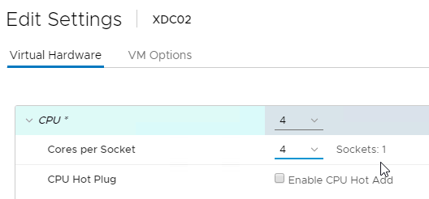
- Add at least three more Gigs of RAM and watch the memory consumption.
- Since there's no control over LHC election, ensure all Controllers in the site/farm have the same specs.
- Operating System: Citrix Virtual Apps and Desktops (CVAD) 2402 CU2 is supported on Windows Server 2022, Windows Server 2019 and Windows Server 2016. Windows Server 2012 R2 and older are no longer supported. Windows Server 2025 is not supported.
- Make sure the User Right Log on as a service includes NT SERVICE\ALL SERVICES or add NT SERVICE\CitrixTelemetryService to the User Right.
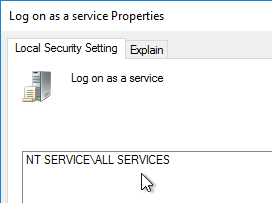
- Download the Citrix Virtual Apps and Desktops 2402 LTSR CU2 ISO.
- On two Delivery Controllers, to install the Delivery Controller software, run AutoSelect.exe from the mounted 2402 CU2 ISO.
- Click Start next to either Virtual Apps or Virtual Apps and Desktops. The only difference is the product name displayed in the installation wizard.

- On the top left, click Delivery Controller.
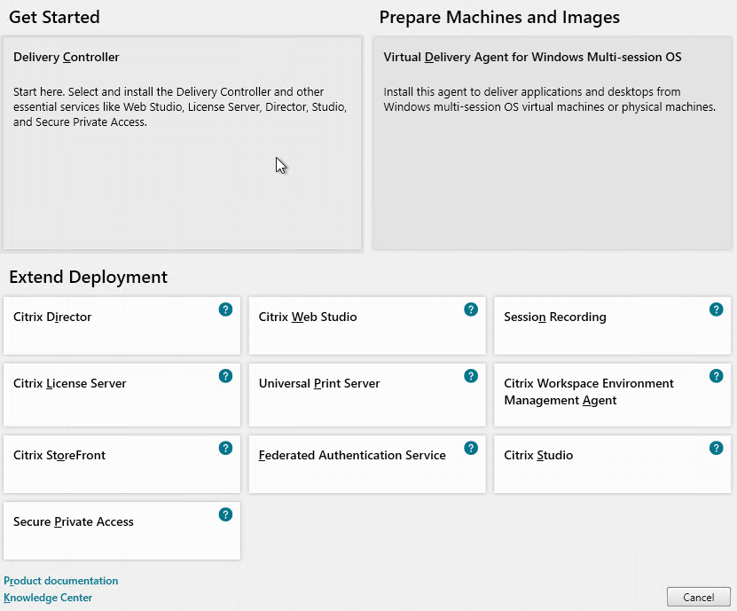
- In the Licensing Agreement page, select I have read, understand, and accept the terms, and click Next.
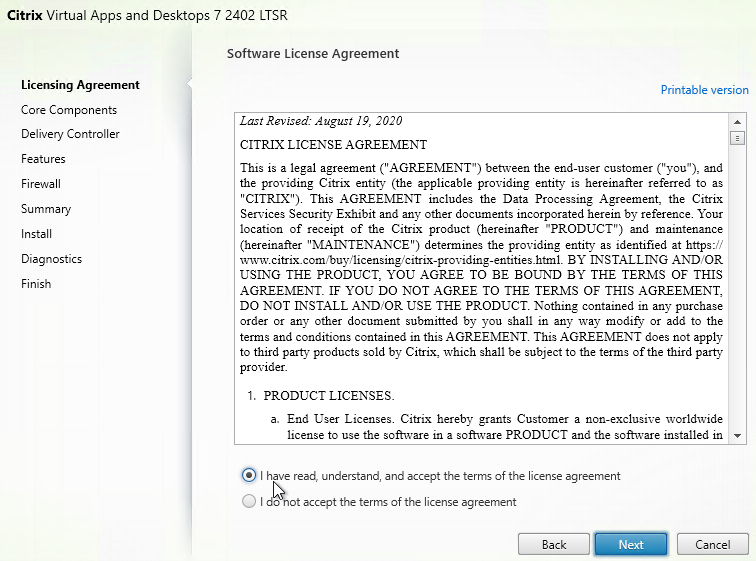
- In the Core Components page, you can install all components on one server, or on separate servers. Splitting out the components is only necessary in large environments, or if you have multiple farms and want to share the Licensing, and Director components across those farms. Notice that StoreFront is no longer an option and must be installed separately.
- CVAD 2212 and newer include Web Studio as an option. Studio is no longer selected by default. Citrix says that Web Studio and StoreFront should be installed on separate servers. Click Next.
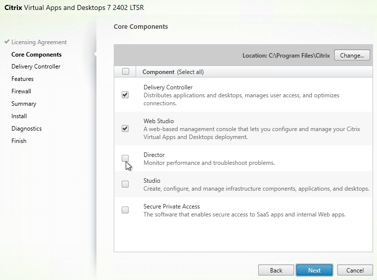
- CVAD 2212 and newer let you add a Delivery Controller that Web Studio will manage.

- In the Features page, uncheck the box next to Install Microsoft SQL Server 2022 Express CU9, and click Next.
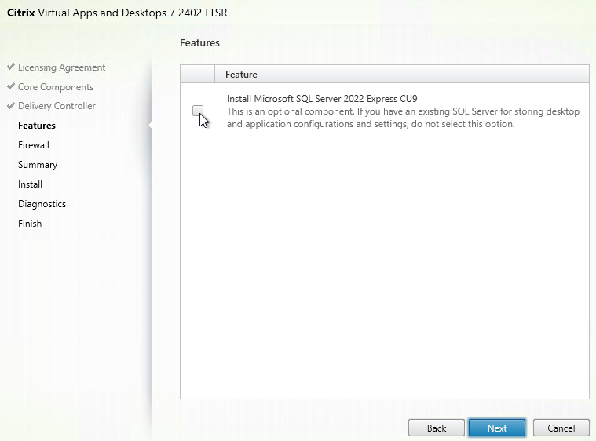
- In the Firewall page, click Next.
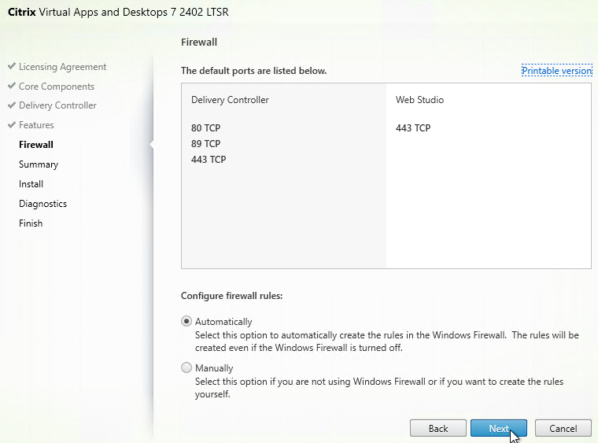
- In the Summary page, click Install.
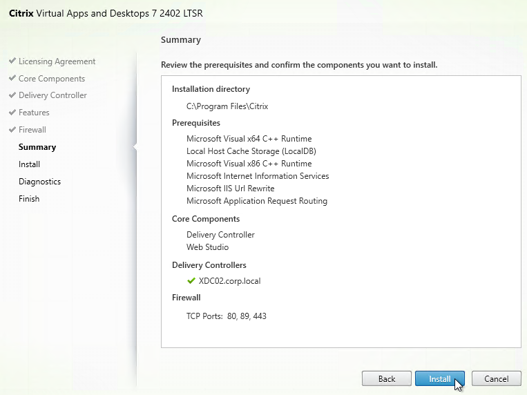
-
The machine will probably restart a couple times.

- After the reboot, and after logging in again, you might see a Locate 'Citrix Virtual Apps and Desktops 7' installation media window. Don't click anything yet.
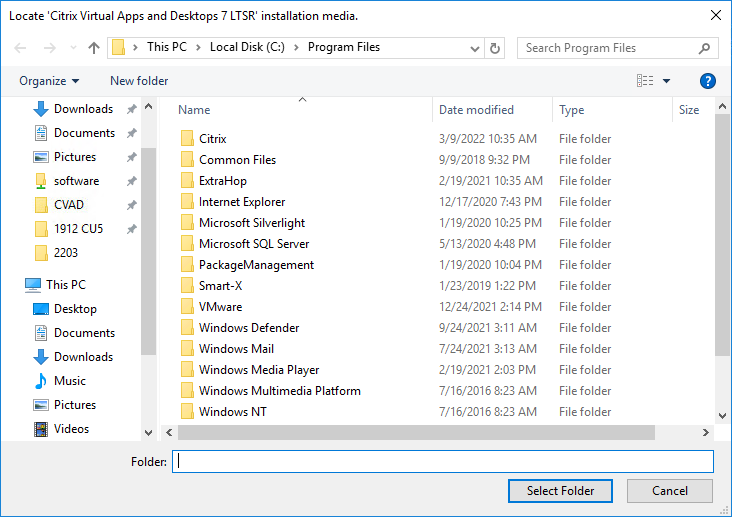
- Go to the Citrix_Virtual_Apps_and_Desktops_7_2402_LTSR_CU2_2100.iso file and mount it.
- Go back to the Locate 'Citrix Virtual Apps and Desktops 7' installation media window.
- On the left, expand This PC, and click the DVD Drive.
- Click Select Folder.
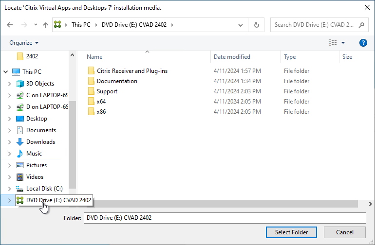
- Installation will resume. Repeat these instructions after each reboot.
- If you see a Diagnostics page, you can optionally Collect diagnostic information by clicking Connect and entering your Citrix Cloud or MyCitrix.com credentials. Click Next.
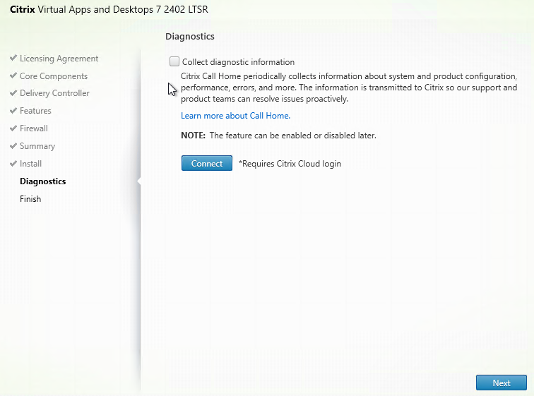
- In the Finish page, click Finish. Citrix Site Manager will automatically launch.
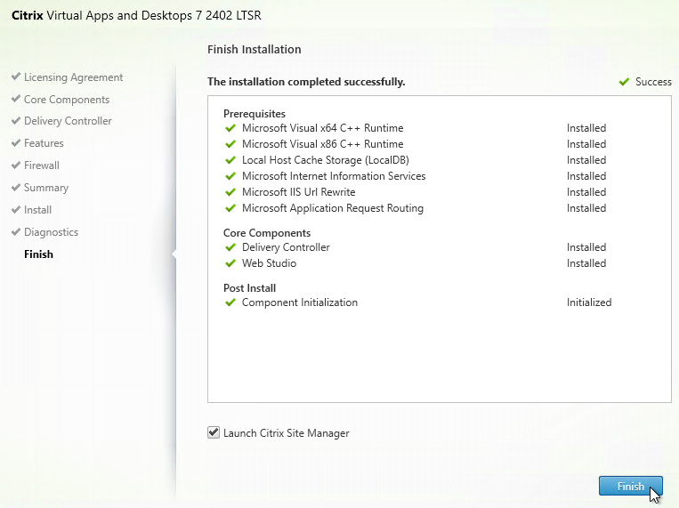
- Anti-affinity - Ensure the two Delivery Controller VMs do not run on the same hypervisor host. Create an anti-affinity rule at vSphere Cluster > Manage > VM/Host Rules > Add. Set the Type to Separate Virtual Machines.
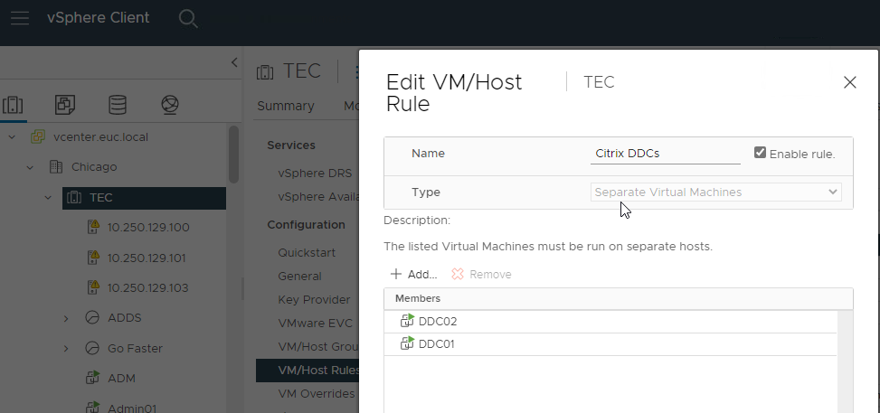
- Citrix Tech Zone Endpoint Security and Antivirus Best Practices: provides guidelines for configuring antivirus software in Citrix Virtual Apps and Desktops environments.
- After the reboot, and after logging in again, you might see a Locate 'Citrix Virtual Apps and Desktops 7' installation media window. Don't click anything yet.


Create Site - Create Database
There are several methods of creating the databases for Citrix Virtual Apps and Desktops (CVAD):
- If you have sysadmin permissions to SQL, let Citrix Site Manager create the databases automatically.
- If you don’t have sysadmin permissions to SQL, then use Citrix Site Manager to generate SQL scripts and send the SQL scripts to a DBA.
Use Citrix Site Manager to Create the Databases Automatically
- Launch Citrix Site Manager. After it loads, click Deliver applications and desktops to your users.
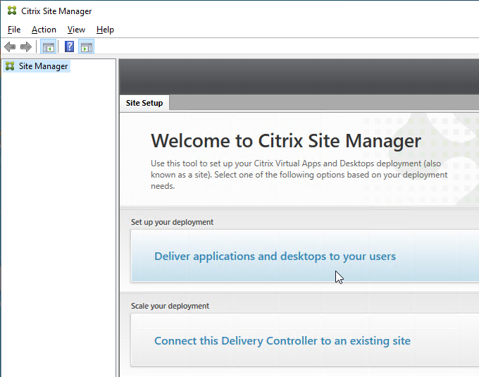
- In the Introduction page, enter a Site Name (aka farm name) and click Next. Only administrators see the farm name.
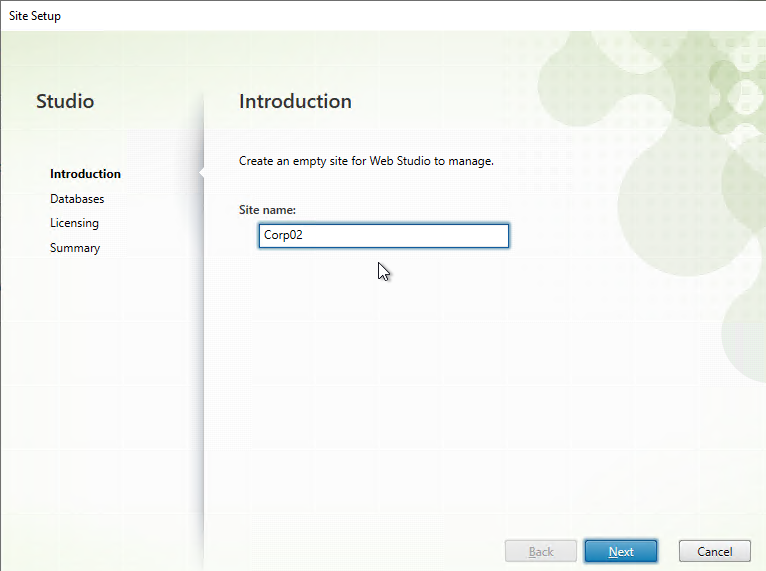
- In the Databases page, if you are building two Delivery Controllers, click Select near the bottom of the same page.
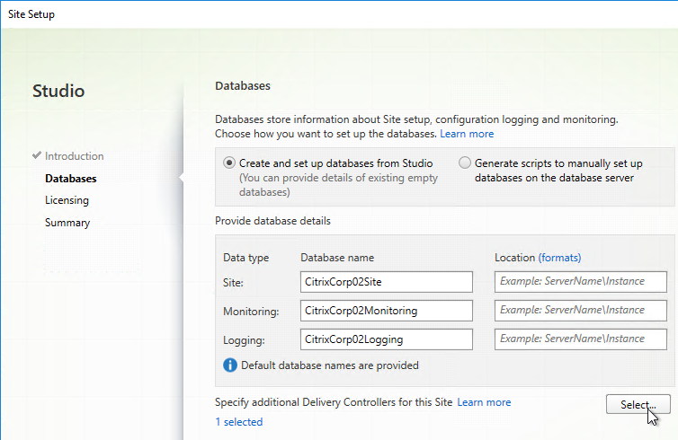
- Click Add.
- Enter the FQDN of the second Delivery Controller and click OK. Note: the Delivery Controller software must already be installed on that second machine.
- Then click Save.
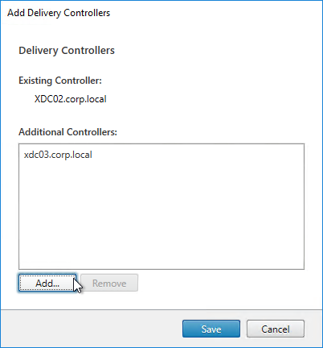
- If the person running Citrix Site Manager has sysadmin permissions to the SQL Server, then enter the SQL server name/instance in the three Location fields and click Next.
- If you don't have sysadmin permission, then jump to the SQL Scripts section below.
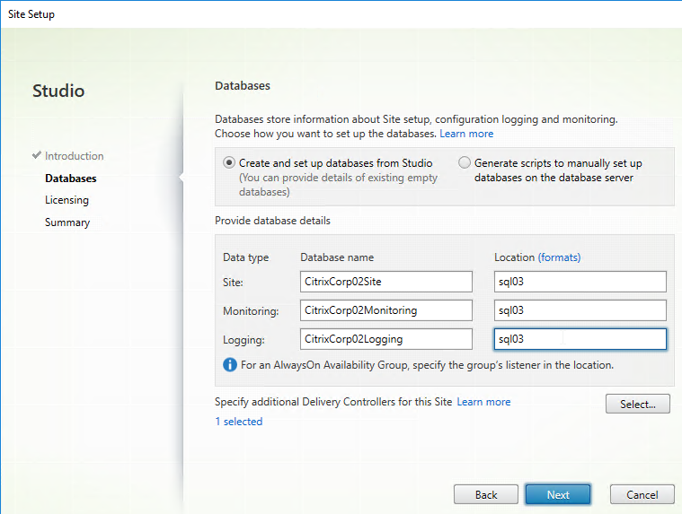
- On the Licensing page, enter the name of the Citrix License Server, and click Connect. If you installed Citrix Licensing with your Delivery Controller, then simply enter localhost.
- If the Certificate Authentication appears, select Connect me, and click Confirm.

- Select your license type, and click Next. If you see both User/Device and Concurrent, then you usually must select User/Device licenses. Also see Multi-type licensing at Citrix Docs.
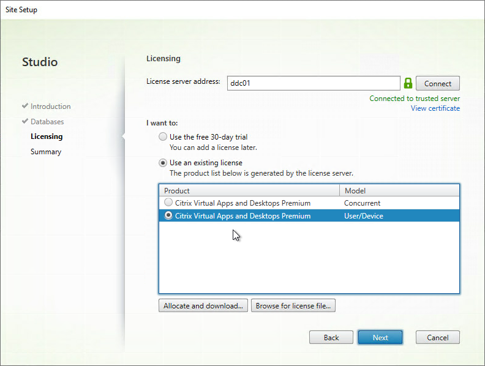
- In the Summary page, if your databases are mirrored or in an Availability Group, each database will show high availability servers and the name of the Mirror server. Click Finish.
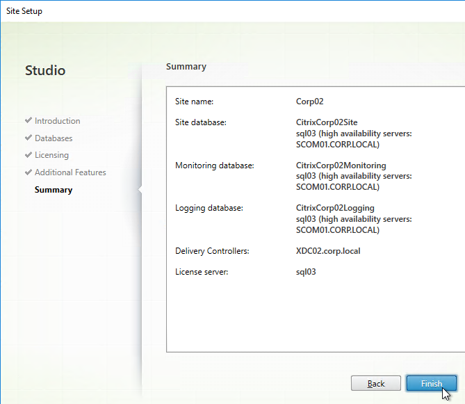
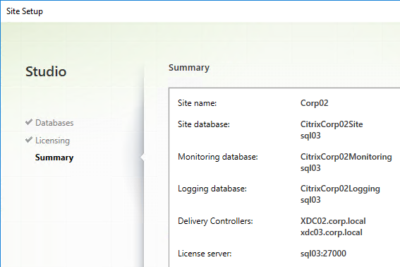
- It will take some time for the site to be created.
- Once done, skip to the Second Delivery Controller section.
Use Citrix Site Manager to create SQL scripts
- If you don't have SQL sysadmin permissions, then change the selection to Generate scripts to manually set up databases on the database server. Change the database names if desired and click Next.
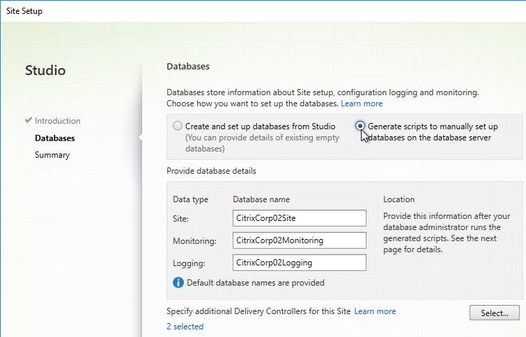
- In the Summary page, click Generate scripts.
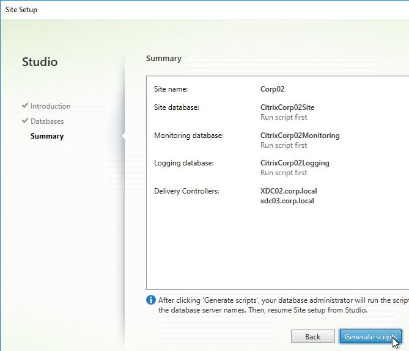
-
A folder will open with many scripts.
-
There's a Principal script for each of the three databases.
- The Mixed scripts and SysAdmin scripts create SQL Server logins whereas the DbOwner scripts do not. Either run the Mixed scripts that contain all tasks or run the SysAdmin and DbOwner scripts separately. The idea is that the separate scripts are run by different SQL admins that have different permissions.
- The Replicas scripts add logons to secondary SQL servers.
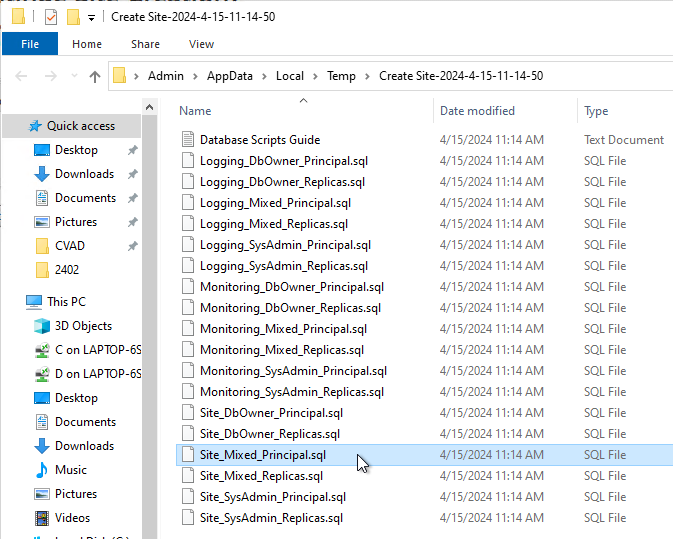
-
Before running the scripts, create the three databases.
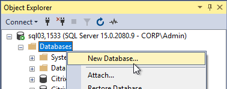
-
At the top of each script is the Database Name that was entered in Citrix Site Manager. The database name needs to match the script.
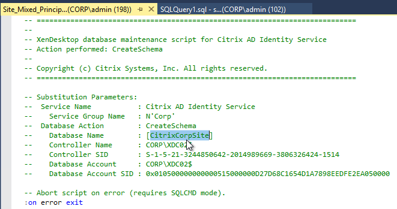
- On the Options tab, change the Collation to Latin1_General_100_CI_AS_KS.
- In the bottom part, find Is Read Committed Snapshot On and set it to True.
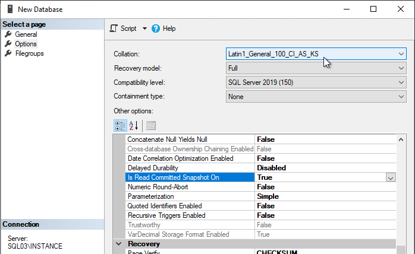
- Repeat this for all three databases.
- You can then add these three databases to an AlwasyOn Availability Group.
-
Now do the following to run either the Mixed scripts or run the SysAdmin and DbOwner scripts separately. The scripts must be run in SQLCMD mode.
-
On the Principal SQL Server, open the file Site_Mixed_Principal.sql.
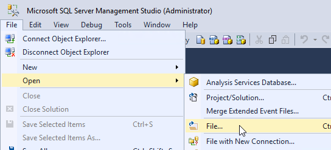
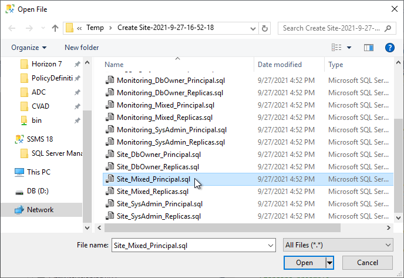
- Open the Query menu, and click SQLCMD Mode to enable it.
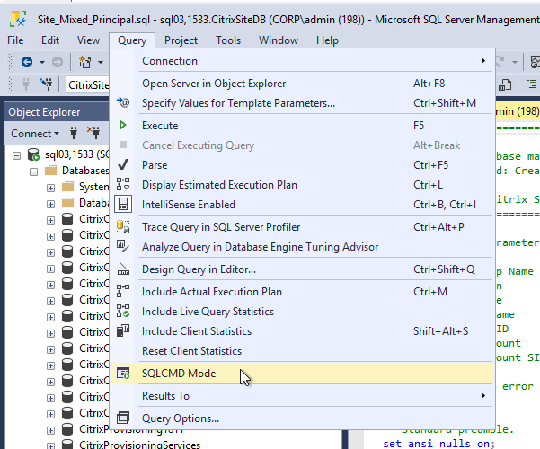
- Then execute the script.
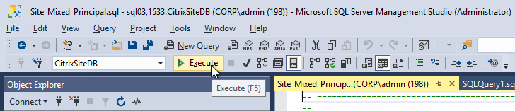
- If SQLCMD mode was enabled properly, then the output should look something like this:
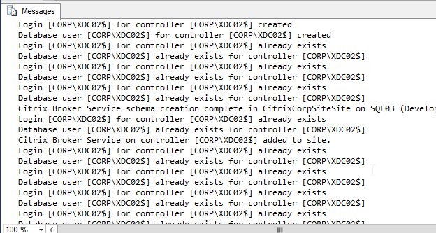
- If you have a mirrored database, then run the Replicas script on the mirror SQL instance. Make sure SQLCMD mode is enabled.
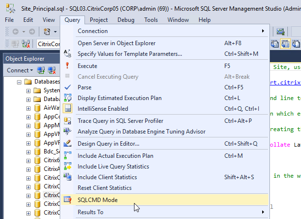
- Repeat for the Logging_Mixed_Principal.sql script.
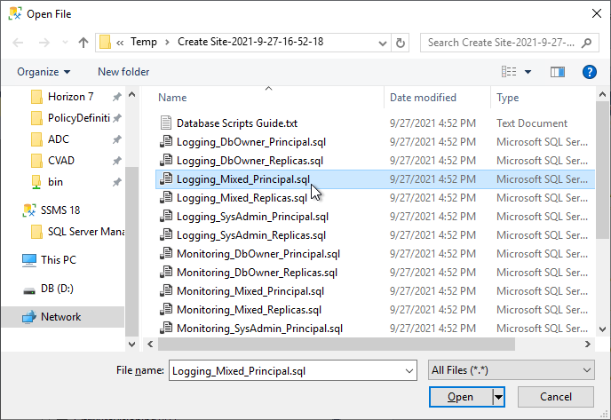
- You’ll have to enable SQLCMD Mode for each script you open.
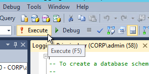
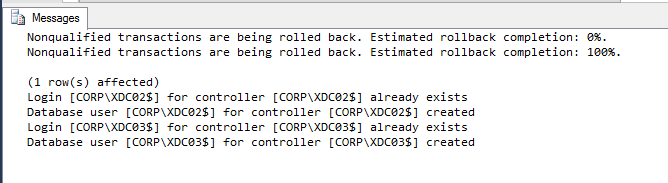
- Repeat for the Monitoring_Mixed_Principal.sql script.
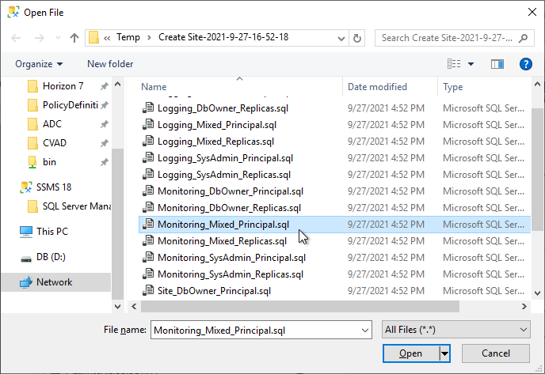
- Once again enable SQLCMD Mode.
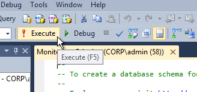
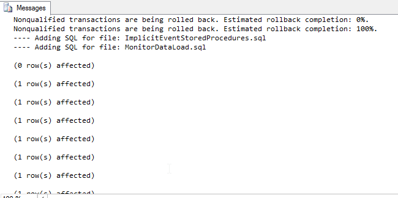
- The person running Citrix Site Manager must be added to the SQL Server as a SQL Login and granted the public server role so that that account can enumerate the databases.
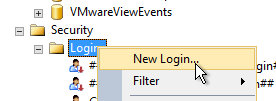
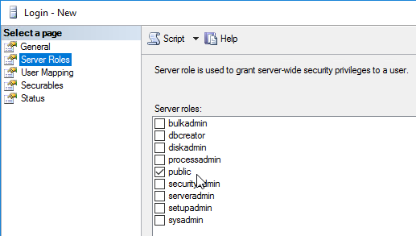
- Back in Citrix Site Manager, click the Continue database configuration and Site setup button.
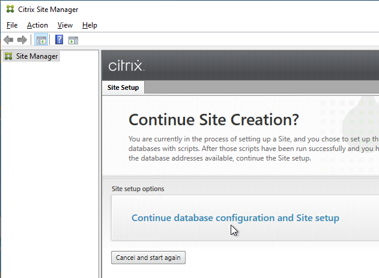
- In the Databases page, enter the SQL server name and instance name, and then click Next.
- On the Licensing page, enter the name of the Citrix License Server, and click Connect. If you installed Citrix Licensing with your Delivery Controller, then simply enter localhost.
- If the Certificate Authentication window appears, select Connect me, and click Confirm.
- Then select your license and click Next. See CTX223926 How to Configure Multiple License Types within a Single XenApp and XenDesktop Site.
- In the Summary page, if your databases are mirrored, each database will show high availability servers and the name of the Mirror server. Click Finish.
- It will take some time for the site to be created.
Second Controller
During Site creation on the first Delivery Controller, in the Site Setup wizard, you might have selected more than one Delivery Controller. In that case, on the second Delivery Controller, simply run Citrix Site Manager and it should already be configured.
Otherwise, additional Delivery Controllers need to be added to the SQL databases.
- If you have sysadmin permissions to SQL, let Citrix Site Manager modify the databases automatically.
- If you don’t have sysadmin permissions to SQL, then use Citrix Site Manager to generate SQL scripts and send them to a DBA.
To use Citrix Site Manager to create the SQL Scripts:
- On the first Delivery Controller, if StoreFront is installed on the Controller, then delete the default StoreFront store (/Citrix/Store) and recreate it with your desired Store name (e.g. /Citrix/Company).
- On the second Delivery Controller machine, install Delivery Controller as detailed earlier.
- After installation, launch Citrix Site Manager on the second controller, and click Connect this Delivery Controller to an existing Site.
- Enter the name of the first Delivery Controller and click OK.
- If you don’t have full SQL permissions (sysadmin), click No when asked if you want to update the database automatically.
- Click Generate scripts.
- A folder will open with multiple SQL scripts. These SQL script files follow the same pattern as the first Delivery Controller where the Mixed scripts do everything, but the DbOwner and SysAdmin scripts are intended to be run by different SQL administration roles. Always run each of these scripts in SQLCMD mode. There are separate scripts for mirrored databases.
- On the SQL Server, open one of the .sql files.
- Open the Query menu and click SQLCMD Mode.
- Then execute the SQL script.
- If SQLCMD mode was enabled properly, then the output should look something like this:
- Repeat for the remaining script files. Enable SQLCMD mode for each script.
- Back in Citrix Site Manager, click OK.
- In Citrix Site Manager you should see both controllers.
SSL for Delivery Controller
SSL certificates should be installed on each Delivery Controller to encrypt the traffic between StoreFront and Delivery Controller. The traffic between StoreFront and Delivery Controller contains user credentials.
The SSL certificate on each Delivery Controller needs to match the FQDN of the Delivery Controller.
-
If StoreFront is installed on the Delivery Controller, then you have two FQDNs to consider: the Delivery Controller FQDN, and the StoreFront FQDN. Make sure the certificate matches the Delivery Controller FQDN, but it's usually not necessary for the same certificate to also match the StoreFront FQDN.
-
The StoreFront certificate is usually hosted on a NetScaler Load Balancing Virtual Server. Users connect to NetScaler instead of directly to the StoreFront servers. The StoreFront certificate only needs to be valid between the user and the NetScaler.
- For the connection between NetScaler and StoreFront server, NetScaler does not validate the certificate, so the certificate on the StoreFront server can be anything. That means you can install a certificate that matches the Delivery Controller FQDN and there's no need for the certificate to match the StoreFront FQDN.
To enable SSL for a Delivery Controller:
- Run certlm.msc, go to Personal > Certificates and create or install a server certificate that matches the Delivery Controller's FQDN. This can be an internally-signed certificate if the StoreFront server trusts internally-signed certificates.
- If IIS is installed on the Delivery Controller, then simply run IIS Manager, go to Default Web Site, click Edit Bindings, and add an https binding using the chosen certificate.
If IIS is not installed on the Delivery Controller, then we need to build a command line to bind the certificate to the Citrix Broker Service.
- Open a command prompt as administrator.
- Enter the following text but don't press Enter yet.
- Go to certlm.msc > Personal > Certificates.
- Double-click the certificate you want to bind.
- On the Details tab, scroll down to Thumbprint and copy the thumbprint.
- Paste the thumbprint into the command line we're building.
- Remove the special character at the beginning of the thumbprint.
- Remove the spaces.
- Add the following to the command line:
Concurrent Logon Hard Limit
From Samuel Legrand XenApp 7.14 – (Really) Manage a DR! - Citrix Policies has a setting called Concurrent Logon Tolerance. However, it is not a hard limit, meaning once the limits are reached, it continues to let users connect. You can configure the Controllers to make it a hard limit by setting the following registry value on the Delivery Controllers:
-
HKLM\Software\Policies\Citrix\DesktopServer
-
LogonToleranceIsHardLimit (DWORD) = 1
Local Host Cache
Local Host Cache (LHC) allows new sessions to be started even if SQL database is unavailable.
From Local Host Cache sizing and scaling at Citrix Docs:
- For LHC LocalDB, assign the Controller VMs a single CPU socket with multiple CPU cores.
- Add two CPU cores for LHC.
- Add at least three more Gigs of RAM and watch the memory consumption.
- Since there's no control over LHC election, ensure all Controllers have the same specs.
- The Docs article has scripts for monitoring LHC performance.
As mentioned by Citrix Docs, make sure PowerShell Execution Policy is set to RemoteSigned, Unrestricted, or Bypass.
If you did a fresh install of 2402, then Local Host Cache should be enabled by default. In PowerShell, you can run **Get-BrokerSite** to confirm.
If not enabled, you can run some PowerShell commands to enable Local Host Cache:
George Spiers Local Host Cache XenApp & XenDesktop shows the Event Log entries when LHC is enabled.
Database Maintenance
Enable Read-Committed Snapshot
The Delivery Controller Database can become heavily utilized under load in a large environment. Therefore, Citrix recommends enabling the Read_Committed_Snapshot option on the Delivery Controller databases to remove contention on the database from read queries. This can improve the interactivity of Studio and Director. It should be noted that this option may increase the load on the tempdb files. See Citrix article CTX137161 How to Enable Read-Committed Snapshot in XenDesktop for configuration instructions.
Change Database Connection Strings
Sometimes the database connection strings need to be modified:
- When moving the SQL databases to a different SQL server
- For AlwaysOn Availability Groups, to add MultiSubnetFailover to the SQL connection strings
- For SQL mirroring, to add Failover Partner to the SQL connection strings
Here are general instructions for moving the database and assigning the correct permissions:
- Backup the three Citrix databases on the original SQL server and restore them on the new SQL server. See Microsoft’s documentation for details.
- In SQL Management Studio > Security > Logins, add the Delivery Controller computer accounts (e.g., CORP\DDC01$)
- When adding the SQL Login, on the User Mapping page, select the three Citrix databases (Site database, Monitoring database, and Logging database)
-
For each of the three Citrix databases, add the Delivery Controller computer account to the various database roles as listed below. The Site database has many more roles than the Logging and Monitoring databases.
-
Site database - ADIdentitySchema_ROLE
- Site database - Analytics_ROLE (7.8 and newer)
- Site database - AppLibrarySchema_ROLE (7.8 and newer)
- Site database - chr_Broker
- Site database - chr_Controller
- Site database - ConfigLoggingSchema_ROLE
- Site database - ConfigLoggingSiteSchema_ROLE
- Site database - ConfigurationSchema_ROLE
- Site database - DAS_ROLE
- Site database - DesktopUpdateManagerSchema_ROLE
- Site database - EnvTestServiceSchema_ROLE
- Site database - HostingUnitServiceSchema_ROLE
- Site database - Monitor_ROLE
- Site database - MonitorData_ROLE
- Site database - OrchestrationSchema_ROLE (7.11 and newer)
- Site database - public
- Site database - StorefrontSchema_ROLE (7.8 and newer)
- Site database - TrustSchema_ROLE (7.11 and newer)
- Monitoring database - Monitor_ROLE
- Monitoring database - public
- Logging database - ConfigLoggingSchema_ROLE
- Logging database - public
From Citrix Docs Update database connection strings when using SQL Server high availability solutions: Citrix offers several PowerShell scripts that update Delivery Controller database connection strings when you are using SQL Server high availability database solutions such as AlwaysOn and mirroring. The scripts, which use the Citrix Virtual Apps and Desktops PowerShell API, are:
- DBConnectionStringFuncs.ps1: The core script that does the actual work. This script contains common functions that the other scripts use.
- Change_XD_Failover_Partner_v1.ps1: Updates (adds, changes, or removes) the failover partner. This script prompts for the failover partner location (FQDN) for each database. (Providing a blank failover partner removes the failover partner. You can also use the ClearPartner option to remove a partner.) Do not set the failover partner to the same location as the principal database server.
- Change_XD_To_ConnectionString.ps1: Uses the provided connection strings to update the connection strings to the databases. This script ensures that certain Citrix services are up and running, and then updates those services in the correct order on all Controllers in the site. Enclose connection string information for each database in quotes.
- Change_XD_To_MultiSubnetFailover.ps1: Toggles the addition and removal of MultiSubnetFailover=true. If you use AlwaysOn Availability Groups, Microsoft recommends that the connection string include MultiSubnetFailover=true. This option speeds up recovery when a high availability event occurs, and is recommended for both single and multi-subnet environments. Run this script once to add the option. Run the script again to remove it.
- Change_XD_To_Null.ps1: Resets all the connection strings on the localhost because something has gone wrong. By resetting the connection strings to null, this script places the Controller into an “initial” state. If you run Studio after running this script, you'll be asked if you want to create a site or join an existing site. This is useful if something has gone wrong and a reset is needed. After the reset, you can try again to set the connection strings.
Here are the DB Connections that must be changed. Make sure you include all of the DB Connections shown below. You can get the full list of database commands by running Get-Command Set-*DBConnection. When changing the DB connections, AdminDBConnection must be the last to be set to NULL, and the first to be configured with the new connection string. Repeat these instructions on all Delivery Controllers in the farm.
Remove the existing Database connections
At the Delivery Controller, open PowerShell as Administrator and run the following commands to clear the existing database connections.
## Disable configuration logging for the XD site:
Set-LogSite -State Disabled
## ## Clear the current Delivery Controller database connections
## Note: AdminDBConnection must be the last command
Set-ConfigDBConnection -DBConnection $null
Set-AppLibDBConnection -DBConnection $null #7.8 and newer
Set-OrchDBConnection -DBConnection $null #7.11 and newer
Set-TrustDBConnection -DBConnection $null #7.11 and newer
Set-AcctDBConnection -DBConnection $null
Set-AnalyticsDBConnection -DBConnection $null # 7.6 and newer
Set-HypDBConnection -DBConnection $null
Set-ProvDBConnection -DBConnection $null
Set-BrokerDBConnection -DBConnection $null
Set-EnvTestDBConnection -DBConnection $null
Set-SfDBConnection -DBConnection $null
Set-MonitorDBConnection -DataStore Monitor -DBConnection $null #Monitoring Database
Set-MonitorDBConnection -DBConnection $null #Site Database
Set-LogDBConnection -DataStore Logging -DBConnection $null #Logging Database
Set-LogDBConnection -DBConnection $null #Site Database
Set-AdminDBConnection -DBConnection $null -force
Run the following commands to set the new SQL connection strings. Adjust the variables to match your desired connection string. For example, if you wish to add ";MultiSubnetFailover=True" to the connection strings, then set the $csSite variable to "Server=$ServerName;Initial Catalog=$SiteDBName;Integrated Security=True;MultiSubnetFailover=True". Repeat this for the $csLogging and $csMonitoring variables.
## Replace <dbserver> with the SQL server name, and instance if present, e.g "ServerName\SQLInstanceName". If no SQL Instance name is mentioned, this commandlet will try to connect to the default SQL instance.
## Replace <dbname> with the name of your restored Database
## Note: AdminDBConnection should be first
$ServerName = "<dbserver>"
$SiteDBName = "<SiteDbName>"
$LogDBName = "<LoggingDbName>"
$MonitorDBName = "<MonitorDbName>"
$csSite = "Server=$ServerName;Initial Catalog=$SiteDBName;Integrated Security=True;MultiSubnetFailover=True"
$csLogging = "Server=$ServerName;Initial Catalog=$LogDBName;Integrated Security=True;MultiSubnetFailover=True"
$csMonitoring = "Server=$ServerName;Initial Catalog=$MonitorDBName;Integrated Security=True;MultiSubnetFailover=True"
Set-AdminDBConnection -DBConnection $csSite
Set-ConfigDBConnection -DBConnection $csSite
Set-AcctDBConnection -DBConnection $csSite
Set-AnalyticsDBConnection -DBConnection $csSite # 7.6 and newer
Set-HypDBConnection -DBConnection $csSite
Set-ProvDBConnection -DBConnection $csSite
Set-AppLibDBConnection –DBConnection $csSite # 7.8 and newer
Set-OrchDBConnection –DBConnection $csSite # 7.11 and newer
Set-TrustDBConnection –DBConnection $csSite # 7.11 and newer
Set-BrokerDBConnection -DBConnection $csSite
Set-EnvTestDBConnection -DBConnection $csSite
Set-SfDBConnection -DBConnection $csSite
Set-LogDBConnection -DBConnection $csSite
Set-LogDBConnection -DataStore Logging -DBConnection $null
Set-LogDBConnection -DBConnection $null
Set-LogDBConnection -DBConnection $csSite
Set-LogDBConnection -DataStore Logging -DBConnection $csLogging
Set-MonitorDBConnection -DBConnection $csSite
Set-MonitorDBConnection -DataStore Monitor -DBConnection $null
Set-MonitorDBConnection -DBConnection $null
Set-MonitorDBConnection -DBConnection $csSite
Set-MonitorDBConnection -DataStore Monitor -DBConnection $csMonitoring
Set-LogSite -State Enabled
Run the following commands to verify connectivity to the database:
## Copy these variables from the previous step
## If you haven’t closed your PowerShell window, then the variables might still be defined. In that case, just run the Test commands
$ServerName = "<dbserver>"
$SiteDBName = "<SiteDbName>"
$LogDBName = "<LoggingDbName>"
$MonitorDBName = "<MonitorDbName>"
$csSite = "Server=$ServerName;Initial Catalog=$SiteDBName;Integrated Security=True"
$csLogging = "Server=$ServerName;Initial Catalog=$LogDBName;Integrated Security=True"
$csMonitoring = "Server=$ServerName;Initial Catalog=$MonitorDBName;Integrated Security=True"
Test-AcctDBConnection -DBConnection $csSite
Test-AdminDBConnection -DBConnection $csSite
Test-AnalyticsDBConnection -DBConnection $csSite # 7.6 and newer
Test-AppLibDBConnection -DBConnection $csSite # 7.8 and newer
Test-BrokerDBConnection -DBConnection $csSite
Test-ConfigDBConnection -DBConnection $csSite
Test-EnvTestDBConnection -DBConnection $csSite
Test-HypDBConnection -DBConnection $csSite
Test-LogDBConnection -DBConnection $csSite
Test-LogDBConnection -DataStore Logging -DBConnection $csLogging
Test-MonitorDBConnection -DBConnection $csSite
Test-MonitorDBConnection -Datastore Monitor -DBConnection $csMonitoring
Test-OrchDBConnection -DBConnection $csSite # 7.11 and newer
Test-ProvDBConnection -DBConnection $csSite
Test-SfDBConnection -DBConnection $csSite
Test-TrustDBConnection -DBConnection $csSite # 7.11 and newer
Director Grooming
If your Citrix Virtual Apps and Desktops is not Premium Edition, then all historical Director data is groomed at 30 days.
For Citrix Virtual Apps and Desktops Premium Edition, by default, most of the historical Director data is groomed at 90 days. This can be adjusted up to 367 days by running a PowerShell cmdlet.
- On a Delivery Controller, run PowerShell elevated (as administrator).
- Run Get-MonitorConfiguration to see the current grooming settings.
- Run Set-MonitorConfiguration to change the grooming settings.
View Logging Database
To view the contents of the Logging Database, in Web Studio, click the Logging node. On the right is Create Custom Report. See Citrix article CTX138132 Viewing Configuration Logging Data Not Shown for more info.
The Logging Database can be queried using Get-LogLowLevelOperation. See Stefan Beckmann Get user who set maintenance mode for a server or client for an example script that uses this PowerShell cmdlet.
Logging Database Grooming
By default, the Logging Database does not groom old entries. You can enable grooming in Citrix PowerShell by running the Set-LogSite cmdlet with the -LoggingDBPurgeDurationDays parameter. More info at Schedule periodic data deletion at Citrix Docs.
Studio Administrators
Full Administrators
- In Web Studio click the Administrators node and then click Create Administrator.
- In the Administrator and Scope page, Browse to a group (e.g. Citrix Admins) that will have permissions to Citrix Web Studio and Director.
- These groups typically have access to all objects, so select the All scope. Alternatively, you can create a Scope to limit the objects. Click Next.
-
On the Role page, select a role, and then click Next. For example:
-
Full Administrator for the Citrix Admins group
- Help Desk Administrator for the Help Desk group
- Machine Catalog Administrator for the desktop team
- In the Summary page, click Finish.
Help Desk
- In Web Studio, click the Administrators node. On the Administrators tab, click Create Administrator.
- In the Administrator and Scope page, Browse to a Help Desk group that will have permissions to Web Studio and Director. Select the All scope. And click Next.
- On the Role page, select the Help Desk Administrator role, and then click Next.
- In the Summary page, click Finish.
- When administrators in the Help Desk role log into Director, all they see is this. To jazz it up a little, add the Help Desk group to the read-only role.
- Right-click the Help Desk Administrator and click Edit Administrator.
- Click Add.
- In the Scope page, select a scope, and click Next.
- In the Role page, select Read Only Administrator, and click Next.
- In the Summary page, click Finish.
- Then click Save. Now Director will display the dashboard.
Customer Experience Improvement Program
Citrix Virtual Apps and Desktops enables CEIP by default.
If desired, you can disable it in Citrix Web Studio (CVAD 2212 and newer):
- Go to https://ControllerFQDN/Citrix/Studio.
- On the left, click Settings.
- On the top right, move the slider for Citrix Customer Experience Improvement Program.
- Click Apply at the bottom.
Citrix Studio collects data for Google Analytics. You can disable this in the registry at HKLM\Software\Citrix\DesktopStudio\GAEnabled = 0.
Each Citrix Virtual Apps and Desktops component has a separate configuration for disabling Customer Experience Improvement Program:
- Citrix License Server CEIP
- Virtual Delivery Agent (VDA) CEIP
- Citrix Profile Management (UPM) CEIP
- StoreFront CEIP
- Citrix Provisioning (PVS) CEIP
- Workspace app CEIP
- Workspace app for HTML5 CEIP
- Session Recording CEIP
- Citrix ADC CEIP
Web Studio Settings
Web Studio 2311 and newer under Logging can show you PowerShell and APIs that Web Studio is using.
Web Studio has a Settings page:
- Web Studio 2308 and newer support Integrated Windows authentication.
- Web Studio 2308 and newer let you configure an Inactivity timeout.
- Web Studio 2311 and newer have multiple site management in the Settings node.
- Use the Site selector at the top right of the page.
- Web Studio 2308 and newer support Vertical load balancing.
- CVAD 2311 and newer let you set Vertical load balancing at the Delivery Group instead of only at the Site.
- Web Studio 2308+ lets you create folders of Machine Catalogs.
- Web Studio 2308+ lets you create folders of Delivery Groups.
- Web Studio 2402+ supports machine profile when using MCS on vSphere. MCS copies machine specifications (e.g., TPM) from the template machine to the MCS machines.
- Web Studio 2402+ has an Images node with Image Definitions and Image Versions that are prepared prior to creating or updating Catalogs. Now you can pre-replicate the baseDisk to datastores and later use the prepared image to quickly update the Catalogs. The Image Versions can also be shared by multiple Catalogs.
Hosting Connection - VMware vCenter
Citrix Virtual Apps and Desktops uses an Active Directory service account to log into VMware vCenter. This service account needs specific permissions in vCenter. To facilitate assigning these permissions, create a new vCenter role and assign it to the service account. The permissions should be applied at the vCenter datacenter object or higher level.
Import vCenter Root Certificate
If the vCenter certificate is valid and trusted, then you can skip to the Hosting Resource section.
For newer versions of vCenter, you can import the root certificate that signed the vCenter Server/Appliance certificate.
- Point your browser to the root path of the vCenter Server URL.
- On the bottom right, click Download trusted root CA certificates.
- Extract the downloaded files.
- Go to \certs\win.
- Sort the files by date, and double-click the newest .crt file.
- On the General tab, click Install Certificate.
- In the Welcome to the Certificate Import Wizard page, change the Store Location selection to Local Machine, and click Next.
- In the Certificate Store page, click Browse.
- Select Trust Root Certification Authorities, and click OK.
- In the Completing the Certificate Import Wizard page, click Finish.
- If you close your browser and reopen it, and then go to the vCenter URL, there should no longer be any certificate errors.
- Skip to the Hosting Resource section.
Import vCenter Certificate
If the vCenter certificate is valid and trusted, then you can skip to the Hosting Resource section.
Alternatively, you can import the actual vCenter Server certificate (instead of the root certificate). This is the only option for older self-signed vCenter certificates.
Newer versions of Citrix Virtual Apps and Desktops (CVAD) have the ability to import the vCenter certificate thumbprint into the database so that every Delivery Controller trusts it. However, it is difficult to update the thumbprint whenever the vCenter certificate changes. It might instead be more reliable to use the older method of configuring the Trusted People store on the Delivery Controllers. Whenever the vCenter certificate is changed, you'll need to repeat these steps.
-
Get the vCenter certificate.
-
Open a browser and point it to the vCenter URL. Note: this procedure to get the certificate won't work in Internet Explorer.
- If Google Chrome, click the Secure box in the address bar, and then click Certificate.
- On the Details tab, click Copy to File.
- In the Welcome to the Certificate Export Wizard page, click Next.
- In the Export File Format page, either format will work. Click Next.
- In the File to Export page, browse to a new file, and click Next.
- In the Completing the Certificate Export Wizard page, click Finish.
- On the Delivery Controller, run certlm.msc. This opens the MMC console with the Certificates snap-in already added and pointing to Local computer.
- On the left, right-click the Trusted People node, expand All Tasks, and click Import.
- In the Welcome to the Certificate Import Wizard page, click Next.
- In the File to Import page, browse to the certificate you saved earlier, and click Next.
- In the Certificate Store page, click Next.
- In the Completing the Certificate Import Wizard page, click Finish.
- Click OK to acknowledge that the import was successful.
- Repeat these steps on the second Delivery Controller. It is important that you import the certificate on all Delivery Controllers before you add the Hosting Resource in Web Studio.
- If you open a browser and point to the vCenter Server, there should be no certificate errors.
Hosting Resources
Hosting Resources are used by both Machine Creation Services (MCS) and by Citrix Provisioning's CVAD Setup Wizard.
A Hosting Resource = vCenter + Cluster (Resource Pool) + Storage + Network. When you create a machine catalog, you select a previously created Hosting Resource and the new virtual machines are created on the Cluster, Storage, and Network defined in the Hosting Resource object. If you need some VDA machines on a different Cluster+Storage+Network, then you’ll need to define more Hosting Resources in Studio.
Hosting Connections and Hosting Resources are two different objects. The Hosting Connection defines the type of hypervisor and the credentials that Delivery Controller uses to log into the hypervisor. A single Hosting Connection can have multiple Hosting Resources for multiple clusters, multiple datastores, etc. The first time you run the wizard both objects are created. Later you can add Hosting Resources to a pre-existing Hosting Connection.
Citrix CTX131239 Supported Hypervisors for Virtual Desktops and Provisioning (Provisioning Services). vSphere 7 is supported in CVAD 2203 and newer. vSphere 8 is supported in CVAD 2212 and newer. SCVMM 2022 is supported in CVAD 2203 and newer.
- In Web Studio click Hosting.
- On the right, click Add Connection and Resources.
- In the Connection page, for Connection type, select VMware vSphere.
- Notice there's a Learn about user permissions blue link to an article that describes the necessary permissions.
- In the Connection address field, enter a vCenter URL similar to https://vcenter01.corp.local/sdk. The URL must contain the FQDN of the vCenter server.
- Enter credentials of a service account that can log into vCenter.
- In the Connection name field, give the connection a name. Typically, this matches the name of the vCenter server.
- If you are not using Machine Creation Services (MCS) or Citrix Provisioning (PVS) and instead only need the vCenter connection for machine power management, change the Create virtual machines using selection to Other Tools.
- If you intend to use MCS or PVS, leave Create virtual machines using set to Studio Tools.
-
Click Next.
- If you see a message about the vCenter certificate, check the box next to Trust certificate, and click OK.
- Note: this vCenter certificate thumbprint is stored in the Citrix Virtual Apps and Desktops database and is not updated when the vCenter certificate changes. See CTX217415 Cannot connect to the VCenter server due to a certificate error for instructions on manually updating the database with the new certificate thumbprint.
- Also see CTX224551 Delivery Controller cannot contact vCenter server after certificate update on vCenter.
- Alternatively, you can import the vCenter certificate to Trusted People on every Delivery Controller.
-
In the Storage Management page, click Browse and select a vSphere cluster.
-
Note: as detailed at CTX223662, make sure there's no comma in the datacenter name.
- Select Use storage shared by hypervisors.
- Beware of Optimize temporary data on available local storage. From Mark Syms at Citrix Discussions: "If you use just MCS caching to local storage then the VM is not agile at all and cannot be moved even when powered off as it has a virtual disk permanently associated with a single host."
- Click Next.
-
In the Storage Selection page, OS and Temporary must be selected on at least one datastore.
-
For maximum virtual machine placement flexibility, only select one datastore per Hosting Resource. To select additional datastores, run this wizard again to create a separate Hosting Resource for each datastore.
- When creating a Machine Catalog you select a Hosting Resource. If the Hosting Resource only has one datastore selected, then you know which datastore the new VMs will be placed on. However, if the Hosting Resource has multiple datastores selected, then the datastores are selected round robin and you don't have any control over which datastore is selected for each new machine.
- In the Network page, enter a name for the Hosting Resource. Since each Hosting Resource is a combination of vCenter, Cluster, Network, and Datastores include those names in this field (e.g. vCenter01-Cluster01-Network01-Datastore01).
- Select a network and click Next.
- In the Summary page, click Finish.
- If you need to rename Storage, Network, or Datacenters in vCenter, see Citrix CTX225019 XA/XD 7.13: Renaming Storage, Network or Datacenters When Used With MCS or PVS. Either run
Update-HypHypervisorConnection -LiteralPath "XDHyp:\Connections\MyConnection", or right-click the Hosting Resource and click Edit Storage. You can cancel the wizard.
If you have multiple datastores for your VDAs, then create multiple Hosting Resources (one for each datastore):
- Run the Add Connection and Resources wizard again.
- You can use the existing vCenter connection.
- This time, select a different datastore. Remember, don't select more than one datastore per Hosting Resource.
- Give the Hosting Resource a name that indicates the chosen datastore.
When you later create a MCS Machine Catalog:
- Select the Hosting Resource for the datastore where you want the VDAs to be placed.
- You can create multiple Machine Catalogs, with each of them on different datastores. You can then combine the Catalogs into a single Delivery Group.
Citrix License Server
Upgrade Citrix License Server to version 11.17.2.0 build 51000, which might be newer than what's on the CVAD ISO.
New License Server
If you're building a new standalone Citrix License Server:
- Citrix now requires Licensing telemetry as described in CTX477614 Citrix License Telemetry FAQ. The build must be 40000 or newer and you must upgrade within 6 months of release.
- Extract the downloaded Citrix License 11.17.2.0 build 51000.

- Run CitrixLicensing.exe
- In the Software License Agreement page, check the box next to I have read, understand, and accept the terms, and click Next.
- In the Install Location page, click Next.
- In the Configure Ports page, click Next.
- In the Configure Customer Success Services Renewal page, click Install.
- In the Summary page, choose an option for sharing license server data with Citrix and then click Finish.
Upgrade License Server
Upgrade your Citrix License Server to 11.17.2.0 build 51000 if it isn't already.
- Citrix now requires Licensing telemetry as described in CTX477614 Citrix License Telemetry FAQ. The build must be 40000 or newer and you must upgrade within 6 months of release.
- Go to the downloaded Citrix License 11.17.2.0 build 51000 and run CitrixLicensing.exe.

 3. If you see the Subscription Advantage Renewal page, make a selection, and click Next.
4. In the Upgrade page, click Upgrade.
5. If you login to the Citrix Licensing Manager (:8083), the top of the page shows the version number 11.17.2.0 build 51000.
3. If you see the Subscription Advantage Renewal page, make a selection, and click Next.
4. In the Upgrade page, click Upgrade.
5. If you login to the Citrix Licensing Manager (:8083), the top of the page shows the version number 11.17.2.0 build 51000.
Citrix Licensing Manager
Newer versions of License Server come with a new management web site.
- From the Start Menu, run Citrix Licensing Manager. Or go to https://
- You might be prompted to login.
- To eliminate this login, add the License Server URL to the Local Intranet zone.
- Licensing Manager might prompt you to register with Citrix Cloud. This is for the new automatic License Activation Service added in License Server build 51000. Alternatively, you can still use the Legacy method of activating licenses.
- On the Settings > Register page, click Register.
- You'll see a screen with a registration code. Click the Copy button and then click Register to be take to Citrix Cloud.
- The Register button in the Citrix License Server takes you to Identity and Access Management > API Access > Product Registrations. Click Register.
- Paste in the copied code and then click Continue.
- Click Register.
- Back in the on-premises Licensing Manager, it will eventually show as Registered.
- On theUsage & Statistics page, scroll down, and then click Upload now. This should cause data to upload to Citrix Cloud and show up in Citrix Cloud Licensing.
- Licensing Manager 11.17.2.0 build 43000 and newer has a Product Information tab showing you component versions.
- Licensing Manager has a Dashboard page that shows installed licenses.
- The default view is for License Activation Service. Click the arrow next to a license to view expiration details. These licenses are activated for 30 days, and activation is automatically extended by the License Activation Service before 30 days has passed. Multiple License Servers can be deployed for these same licenses. There is no enforcement of licensed limits.
- There's also an option for Citrix Licenses (Legacy) that is based on downloaded license files. These licenses can only be installed on one License Server. License quantities are enforced.
- If you click the gear icon on the top right...
- On the Account tab, you can add License Server Administrators.
- The Update Licenses tab lets you check for license renewals and download them.
Activate Citrix License
The easy way to install and activate a Citrix license using the Legacy method is through Citrix Web Studio. Alternatively, the License Activation Service can activate licenses automatically.
- In Web Studio, click the Licensing node.
- On the right, if you see a Log On button, click it and log on to the license server.
- Click More and then click Allocate License.
-
Enter the license access code and click Show.
-
You can find your license access code at https://citrix.com/account and then click Manage Licenses.
-
Back in Web Studio, enter the License Access Code, click Show, and then click the Allocate licenses button at the bottom.
-
Another method of allocating licenses is in the Citrix Licensing Manager at https://MyLicenseServer:8083 > Install Licenses tab.
- After licenses are installed, click Edit Product Edition at the top of the Licensing page.
- Change the edition to match your licenses. If you see both Virtual Apps and Virtual Desktops licenses, you must select Virtual Desktops. If you see both Concurrent and User/Device, then you must select User/Device. Click Save when done.
-
Citrix Virtual Apps and Desktops supports mixed licensing in a single site/farm. See the following:
-
Citrix Blog Post Introducing Multi-Type Licensing in XenApp & XenDesktop 7.14.
- Multi-type licensing at Citrix Docs.
License Server CEIP
Citrix License Server enables CEIP by default. This can be disabled:
- In the Citrix Licensing Manager (https://MyLicenseServer:8083) by clicking the gear icon.
- Switch to the Usage and Statistics tab and make a selection in the Share license server data with Citrix section.
Citrix License Server Monitoring
Citrix Licensing Manager has historical usage reporting:
- Run Citrix Licensing Manager from the Start Menu. Or use a browser to connect to https://MyLicenseServer:8083
- On the Historical Use tab, use the drop-down menus to select a license type, select dates, and export to a .csv file.
- At the bottom of this page is a link to change the retention period.
Jonathan Medd Monitor Citrix License Usage With PowerShell.
Lal Mohan - Citrix License Usage Monitoring Using Powershell
Remote Desktop Licensing Server
Install Remote Desktop Licensing Server
Do the following on your Delivery Controllers:
- In Server Manager, open the Manage menu, and click Add Roles and Features.
- In the Installation Type page, select Role-based or feature-based installation.
- Click Next until you get to the Server Roles page. Check the box next to Remote Desktop Services, and click Next.
- Click Next until you get to the Role Services page. Check the box next to Remote Desktop Licensing, and click Next.
- Click Add Features if prompted.
- Then finish the wizard to install the role service.
Activate Remote Desktop Licensing
- After RD Licensing is installed, in Server Manager, open the Tool menu, expand Terminal Services (or Remote Desktop Services), and click Remote Desktop Licensing Manager.
- The tool should find the local server. If it does not, right-click All servers, click Connect, and type in the name of the local server.
- Once the local server can be seen in the list, right-click the server and click Activate Server.
- In the Welcome to the Activate Server Wizard page, click Next.
- In the Connection Method page, click Next.
- In the Company Information page, enter the required information, and click Next.
- All of the fields on the Company Information page are optional, so you do not have to enter anything. Click Next.
- In the Completing the Activate Server Wizard page, uncheck the box next to Start Install Licenses Wizard now, and click Finish. Since the session hosts will be configured to pull Per User licenses, there is no need to install licenses on the RD Licensing Server.
- In RD Licensing Manager, right-click the server, and click Review Configuration.
- Ensure you have green check marks. If the person installing Remote Desktop Licensing does not have permissions to add the server to the Terminal Server License Servers group in Active Directory, ask a domain admin to do it manually. If you have the proper permissions, click Add to Group.
- Click Continue when prompted that you must have Domain Admins privileges.
- Click OK when prompted that the computer account has been added.
- Click OK to close the window.
Citrix Scout
Delivery Controller includes Citrix Scout that can be launched from the Start Menu.
The tool can run a manual collection, run a trace, schedule periodic collection, or run a Health Check.
Health Check:
- When adding machines, you can select StoreFront or Windows VDA.
- When you select machines, it might tell you to enable PSRemoting.
- Winrm is usually not enabled on desktop machines. Login to the machine, open command prompt as administrator, and run winrm quickconfig. It's also possible to use Group Policy to enable winrm.
- Go back to Citrix Scout and click Continue.
- Click Start Checking.
- You can click View Details to view the issues it found.
Collect:
- The wizard is identical to the Health Check wizard, except there's another screen to upload the data.
- If Citrix Cloud credentials, then you need to Generate a token.
- After logging into Citrix Cloud, copy the token.
- Go back to Citrix Scout and paste the token. Click Continue.
- Click Start Upload.
- Click View Analysis.
Links with more information:
- Bas van Kaam With XenDesktop & XenApp 7.14 comes Scout 3.0 – some big changes, read what’s new - compares old Scout with new Scout
- Citrix Docs Citrix Scout
Citrix Virtual Apps and Desktops Health Check
Sacha Thomet Finally 1.0 – but never finalized!: XenApp & XenDesktop 7.x Health Check script has now Version 1.0.
Pavan900 posted a PowerShell-based Health Check script at Citrix Studi - Colors for Maintenance Mode at Citrix Discussions.
Andrew Morgan - New Free Tool: Citrix Director Notification Service: The Citrix Director Notification service sits on an edge server as a service (or local to the delivery controller) and periodically checks the health of:
- Citrix Licensing.
- Database Connections.
- Broker Service.
- Core Services.
- Hypervisor Connections.
And if any of these items fall out of bounds, an SMTP alert is sent to the mailbox of your choice for action. The tool will also send “All Clear” emails when these items are resolved, ensuring you are aware when the service has resumed a healthy state.